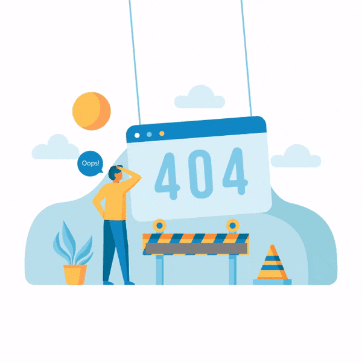

<div class="d-flex flex-row flex-wrap justify-content-center align-content-center gap-2">
    <h3 class="text-center m-0">The page you requested was not found, go back to</h3>
    <button data-link="not-found" class="btn btn-primary redirect">Main page</button>
</div>

